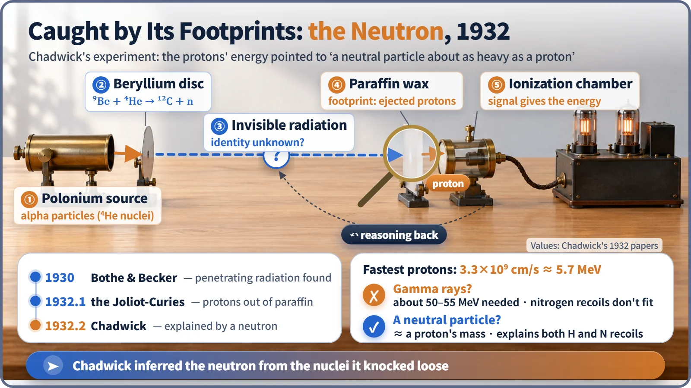
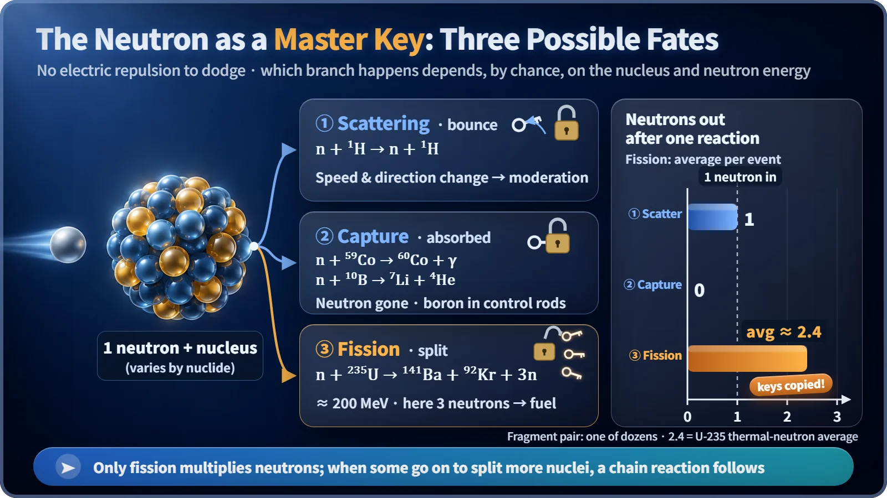

Nuclear Reactions & Fission · 027
The Lock That Cuts You New Keys — Why the Neutron Is the Key to Nuclear Reactions
With no charge to repel it, the neutron reaches any nucleus. Of its three possible fates, only fission returns more neutrons than it takes.
The neutron carries no electric charge, so it can reach any atomic nucleus without being pushed away. Once there it may scatter, be captured, or cause fission, and fission alone gives back more neutrons than it takes in, about 2.4 on average for uranium-235. That is what makes a self-sustaining chain reaction possible. [1]
February 1932: a puzzle in a block of paraffin
In 1930, Bothe and Becker in Germany fired alpha rays (helium nuclei) from polonium at a thin plate of beryllium and found an invisible radiation with enormous penetrating power. The only invisible, highly penetrating radiation known at the time was gamma rays, so everyone assumed it was a powerful gamma ray.
In January 1932, Irène Joliot-Curie and Frédéric Joliot aimed this radiation at paraffin, a candle-like wax packed with hydrogen, and protons came flying out. They took this to mean gamma rays were kicking protons loose, which would require gamma rays of about 50 MeV, absurdly large compared with any gamma ray known then.
At the Cavendish Laboratory, James Chadwick wasn't convinced. A massless particle of light kicking a heavy proton that hard? He threw himself into about two weeks of nonstop experiments. [2]

Catching an invisible culprit by its footprints
Chadwick measured the ejected protons: up to about 33,000 km per second, or about 5.7 MeV. He also swapped the paraffin for nitrogen and measured how fast the nitrogen nuclei recoiled. The gamma-ray hypothesis could not fit these numbers at the same time. The protons alone demanded gamma rays above 50 MeV, the nitrogen needed far more, and the recoils were thousands of times more frequent than theory allowed.
Assume instead a particle with almost the same mass as a proton but no electric charge, and every number fell into place. A billiard ball hitting an identical ball head-on hands over nearly all its energy; only a particle of similar mass could knock a proton out that hard. From the ratio of the hydrogen and nitrogen recoil speeds, Chadwick estimated its mass at about 1.005 to 1.008 atomic mass units, almost exactly a proton's. This was the neutron, produced in the beryllium by the reaction ⁹Be + ⁴He → ¹²C + n.
Chadwick never actually saw a neutron. He measured only its footprints, the recoiling protons and nitrogen nuclei, and tracked down the culprit using conservation of energy and momentum. The work earned him the 1935 Nobel Prize in Physics. [2] [3]
A master key that fits any lock
An atomic nucleus is positively charged, so charged particles such as protons or alpha particles are pushed away more strongly the closer they get. The neutron has no charge, feels none of this repulsion, and can reach a nucleus even when it is moving slowly. It is like a master key that slips into any nuclear lock. What happens next is a matter of probability that depends on the nucleus and on the neutron's speed. There are three main branches.
1. Scattering: the key pops back out. The neutron hands over part of its energy and flies off in a new direction, as in n + ¹H → n + ¹H. The neutron count stays the same; only the speed drops. This is how water slows neutrons down in a reactor.
2. Capture: the lock swallows the key. The neutron is held by the nucleus and disappears, and a gamma ray or another particle comes out. Hydrogen becomes deuterium (n + ¹H → ²H + γ); cobalt-59 becomes cobalt-60, a gamma-ray source used in medicine and industry; boron-10 splits into lithium and an alpha particle. Control rods and the boric acid in reactor coolant play this swallowing role.
3. Fission: the lock opens and cuts new keys. Certain nuclei, such as uranium-235, split in two after taking in a neutron, for example n + ²³⁵U → ¹⁴¹Ba + ⁹²Kr + 3n. About 200 MeV is released each time, and about 2.4 new neutrons fly out on average. [1] [4]

| Branch | Example | Neutrons in | Neutrons out |
|---|---|---|---|
| Scattering | n + ¹H → n + ¹H | 1 | 1 |
| Capture | n + ⁵⁹Co → ⁶⁰Co + γ | 1 | 0 |
| Fission | n + ²³⁵U → ¹⁴¹Ba + ⁹²Kr + 3n | 1 | about 2.4 on average |
What happens when keys copy themselves
Scattering breaks even, capture is a loss, and fission puts one neutron in and gets about 2.4 out. Each new key can open the next lock, which cuts more keys, making a self-sustaining chain reaction possible. Among practical nuclear reactions, fission is essentially the only one that gives back more of the same particle than went in.
Not every new key opens another lock. Some leak out of the reactor and some are captured. Even uranium-235, struck by a slow neutron, splits only about 85% of the time; the other 15% or so simply keeps the neutron. [4]
A reactor hands out the three branches
The fuel handles fission, the water handles scattering, and the control rods and boric acid handle capture. Adjusting a reactor's power really means keeping the number of keys passed to the next generation at exactly one on average. Insert the control rods and there are more swallowing locks, fewer keys, and the reactor shuts down. Capture also makes structural materials radioactive, which is why radiation exposure is managed during maintenance.
Two misconceptions: a neutron does feel force, the full strong nuclear force once it is close to a nucleus; and a neutron that reaches a nucleus does not always cause fission. Most encounters end in scattering or capture, and fission happens only with some probability, in particular nuclei such as uranium-235 or plutonium-239.
Key takeaways
Caught in 1932 by its footprints in protons knocked out of paraffin, the neutron is a master key that fits any nucleus because it has no charge. Every time it opens the lock called fission, it cuts two or three new keys, and that is how a reactor keeps fission going on its own.